Creating a better digital experience for the university's primary food provider.
University of Waterloo Food Services
Website restructure & design
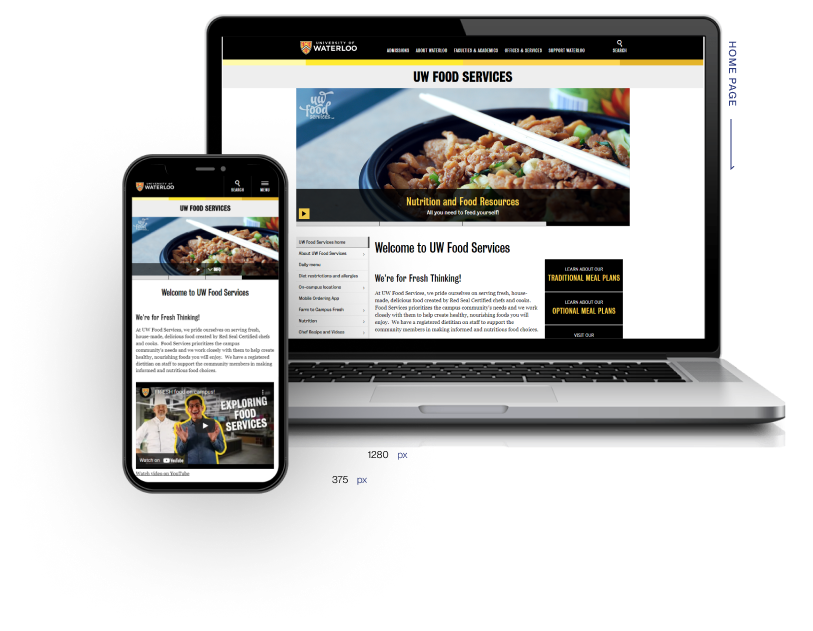
Connecting digitally with customers in a clean and simple way, while staying aligned with the university website and branding guidelines.
As one of the largest organizations on campus, it was due time to improve our digital presence.
The UWFS website contains a wealth of information, but the organization and navigation left many students soured by a poor experience. Our goal was to translate our three key values into an online web experience: building relationships with customers, providing convenience in our service, and having choices that meet every person’s needs.
YEAR
Sept - Dec 2018 (4 months)
ROLE
Solo designer
TEAM
Vivian Liu, Amanda Liebeck, Rachael Henderson
Part 01: Overview
What is UWFS?
Design Challenges
The Problem
Part 02: Research
User Research
The Users
Design Criteria
Information Architecture
Styleguide
Part 03: Design
Design Outcomes
Reflections
Overview.
/01
What is UWFS?
University of Waterloo Food Services (UWFS) is an ancillary service of the University of Waterloo providing foods and drinks to the university community. We pride ourselves on serving fresh, house-made, delicious food created by Red Seal Certified chefs.
On top of supporting over 70 local farmers, UWFS strives to promote a healthy, sustainable university environment. We based most of our research and design on our three key values of:
- Developing trusting relationships with our customers.
- Delivering products & services as conveniently as possible.
- Providing a wide range of options to meet everyone’s needs.
We are passionate about the UN Sustainable Development Goals, specifically Good Health and Wellbeing with programs like reusable take-out containers and farmer's markets, and tried to also reflect this in our digital space.
Furthermore, we wanted to promote several key avenues UWFS provides value to our customers. This includes meal plan offerings, nutritional and wellness programs, and frequent initiatives/events supporting student life, diversity and culture.
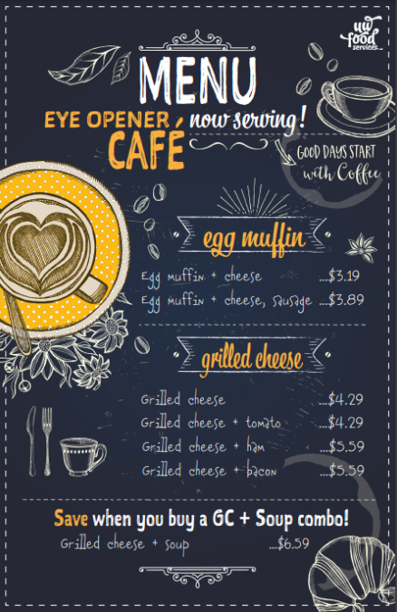
A menu/poster I designed for a breakfast promotion at the Eye Opener Café.
/02
Design Challenges
Challenge 1
Organizing a complex information hierarchy
In our initial investigation, we found that users struggled to navigate the complex hierarchy of information on the website. Our team often received questions from students where the answers they seek were already available on the website but they didn’t know how to find it. However, with so much information to display, restructuring the website to improve organization and navigation proved to be more difficult than anticipated.
Approach
My proposed strategy was to present information on-demand instead of all at once, increasing visibility of high-priority information and moving low-priority information to subpages. We identified which information to hide and which to emphasize so that the key sections can speak more clearly.
Challenge 2
Creativity within strict design limitations and guidelines
While UWFS operates in-person in eateries on-campus, an online presence allows their customers to learn about products and services on their own devices (figuratively and literally!). In comparison to other Canadian universities, we realized our site needed to be revamped as it wasn’t generating enough traffic and engagement to serve its purpose. There wasn’t much room for creative innovation as most of the site needed to fit within strict design limitations and guidelines, as it was hosted on the university’s CMS web framework.
Approach
I needed to learn the foundations of this web framework in order to understand what is technologically feasible before diving into designing a new face and features.
This project taught me to break down every part of the problem and question my assumptions to create better design solutions. On the surface, the task seems simple but underneath the iceberg there are many complex layers of branding, structure, and user flows to consider.
/03
The Problem
We chose three high-priority, high-traffic pages to focus of our exploration in terms of improving organization and performance. This project scope was determined in an initial exploration meeting with the UWFS department head using pre-existing data collected by the marketing team from web analytics, email feedback, and intercept surveys.
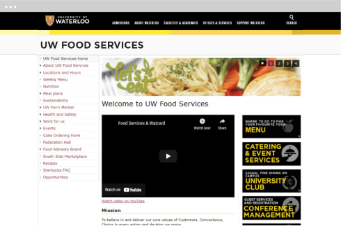
1.Home Page
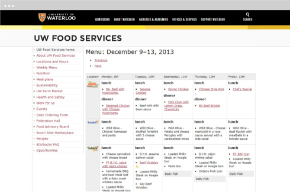
2.Daily Menu
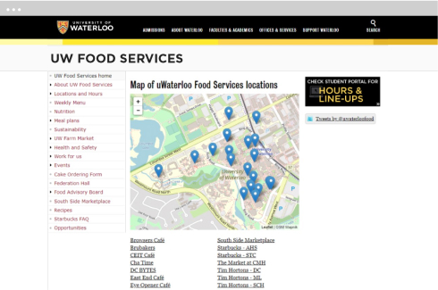
3.Locations & Hours
Research.
/01
User Research
Following our initial meeting, we conducted 3 main research methods to better understand why our users choose not to use the website:
- Student Focus Group: Every semester the marketing department hosts a student focus group called the “Food Advisory Board”. We discussed with the group how students may use our website to find relevant information and collected valuable feedback.
- User Interviews: We led several interviews with students and staff members who regularly interacted with our website to collect data on what tasks they are responsible for and any inconveniences they may encounter.
- Intercept Surveys: Our website has an anonymous intercept survey where users can submit feedback, concerns, and complaints. We collected the responses of this survey over the past year to analyze common problems users were facing.
We found the major issues were all related to the way information is collected and presented. We also categorized four key user archetypes to center our design solutions around:
/02
The Users
01.
This is Eva:
- Second-year, full-time student at UW
- Lives in residence, has a meal plan and uses the website to check the rotational menus every day
- Vegetarian, health-conscious
Behaviours
- Uses their meal plan daily.
- Busy schedule, prefers to go the nearest on-campus location.
Motivations
- Checks menu for vegetarian options that fits her dietary needs.
- Good health and academic performance start with a healthy diet.
Needs
- Needs to read the menu on-the-go using her phone or laptop.
- Needs vegetarian options available preferably at her residence cafeteria.

02.
This is Pierre:
- First-year, full-time student at UW
- Lives off-campus, often meal preps but will occasionally buy food or coffee at an eatery
- No dietary restrictions, values quick and convenient options
Behaviours
- Busy schedule, buys food on-the-go when he isn’t meal prepping.
- New to on-campus eateries, still unfamiliar with all the locations.
Motivations
- Often chooses familiar, franchise locations like Tim Hortons over exploring other eateries.
- Choices often based on convenience.
Needs
- Needs a convenient way of searching for locations, hours, and menus on-the-go.
- Needs motivation, like time, menu, or distance to visit new eateries.
03.
This is Henry:
- Incoming student at UW, currently in high-school
- Planning to move into a residence and needs to pick a meal plan
- Social, extroverted, interested in learning more about UWFS
Behaviours
- Transitioning to post-secondary, excited for what UW has to offer.
- Exploring new, exciting interests.
Motivations
- Checks the website to explore meal plan offerings and find interesting eateries to visit.
- Checks the menu/meal plan for food options that interest him.
Needs
- Needs to learn about meal plan options and on-campus meal options with his parents before he moves.
04.
This is Rhea:
- Marketing staff at UWFS
- Responsible for keeping the website up-to-date, including making changes to the rotational menu, hours of operation, and posting news and events
Behaviours
- Works on the website, makes daily updates.
- Collects and responds to feedback to help improve her work.
Motivations
- Personally invested in the performance of the website.
- Cares about the value it provides students and tries to make it better.
Needs
- Better scalability to accommodate for changes she might want to add.
- Needs to be informed and understand any back-end changes we make.
/03
Design Criteria
What do these users need?
Our research suggested the main factor impacting user retention was a poor visual layout and a resulting confusing navigation. People stated they often clicked away from the site before finding the information they need because the lack of organization was frustrating to navigate. In most cases, they were overwhelmed with the amount of information they were presented with, had to click multiple links to find what they were looking for, and felt distracted during the whole process.
We identified 3 high-level goals for this project to address our users’ pain points:
- Create an efficient, seamless experience for users to search for relevant information such as dietary restrictions.
- Improve discoverability of key information such as new products, initiatives, and events that are key to delivering the UWFS values.
- Create a system that is both easy to use and effective at navigating information.
Next, we turned these goals into 3 actionable criteria to help us review the current and new pages:
01
Effectiveness
Are user pain points addressed and overall functionality of the website improved?
02
Convenience
Is information concise, accessible, and easy to navigate?
03
Creativity
Does the new design captivate and motivate users to explore more?
/04
Information Architecture
We started with an analysis of the current information architecture and how we can simplify it to reduce distracting noises.
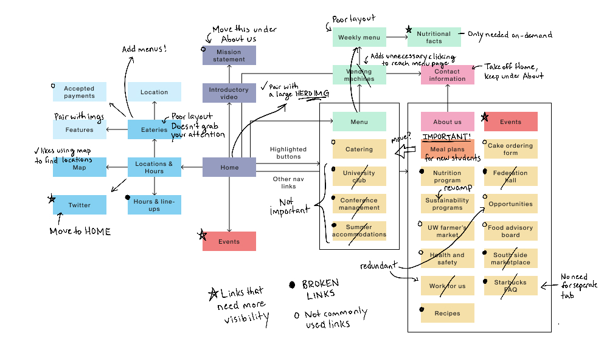First analysis and feedback
We reorganized the layout of information into clear categories for better organization, removed broken links, and condensed the navigation so key links can stand out better.
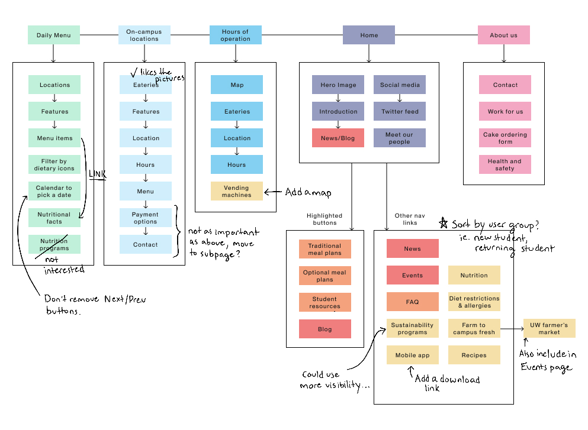Second analysis and feedback
Finally, this is a brief summary of the planned changes we landed on before diving into the redesign.
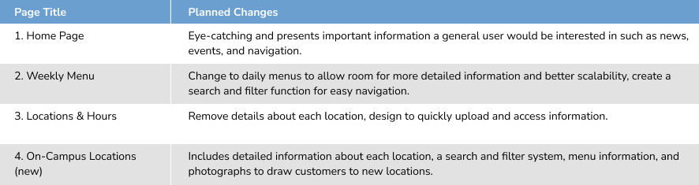/05
Styleguide
Grid
Each webpage must follow a specific grid layout supported by the university’s CMS framework.
x1 sidebar
x1 body
x1 optional sidebar
FIXED ELEMENTS
x1 top nav menu
x1 top title
x1 left nav menu (sidebar)
x1 footer

Colour & Typography
The following was taken from the university guidelines to ensure consistency and alignment with the rest of the university throughout the new design.
Design.
Home Page
The homepage reflects our commitment to customers, convenience, and choice. It is the foundation of the website, connecting all the other pages and encourages users to explore our features.
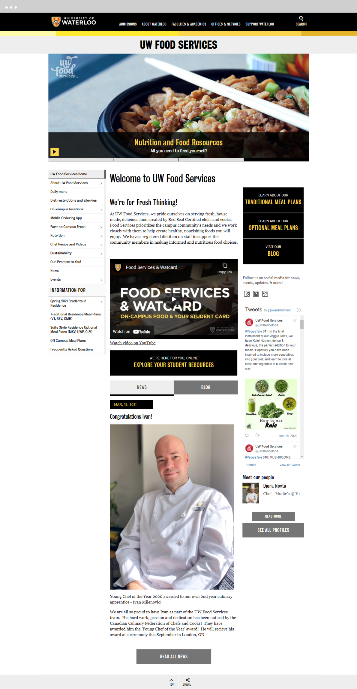
Landing Page
Improved the hero banner to create a pseudo-landing page showcasing featured events, updates, and new products.
Original Home Page
New Home Page

Call to Action
We wanted to draw attention to the links to key subpages through a special button instead of the regular navigation menu. The black background lets the button pop out and on hover, inverts colours.
Default state
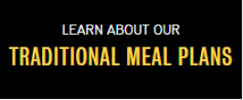Hover state
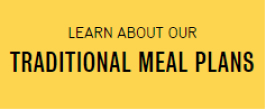UWFS plays an important role in student life, we want to be as transparent as possible to foster an environment of trust and care with our customers.
Social Media
New icons and an integrated web element to increase visibility of our social media accounts, the main channel of communication with users where we share news, events and promotions.
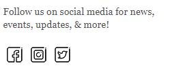
Home Away From Home
Students can click on our chefs’ profiles to put a face to the hardworking, dedicated UWFS chefs working in our many eateries.
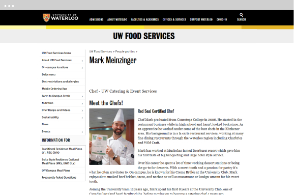
Daily Menu
The new daily menu lets individual products speak more clearly with an improved list layout and nutrition filters.
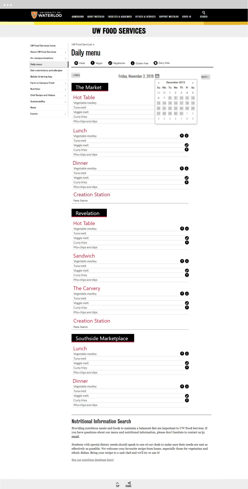
New Layout
Compared to the original layout, the cascading list-style menu provides a lot more space to add items and includes important dietary information that users may need when picking meals.
Original Weekly Menu
New Daily Menu
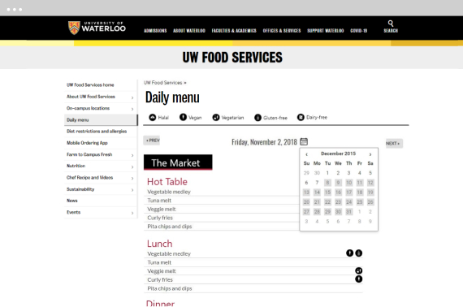This new layout is also mobile friendly as it would scale vertically rather than horizontally. This makes it easier for users to navigate the menu on-the-go, on their smartphones.
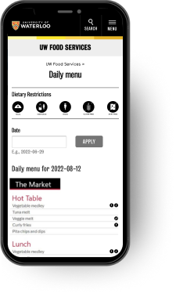
Efficiency & Convenience
Several UI elements were designed into the new menu to help with navigation, efficiently & conveniently guiding users to relevant information.
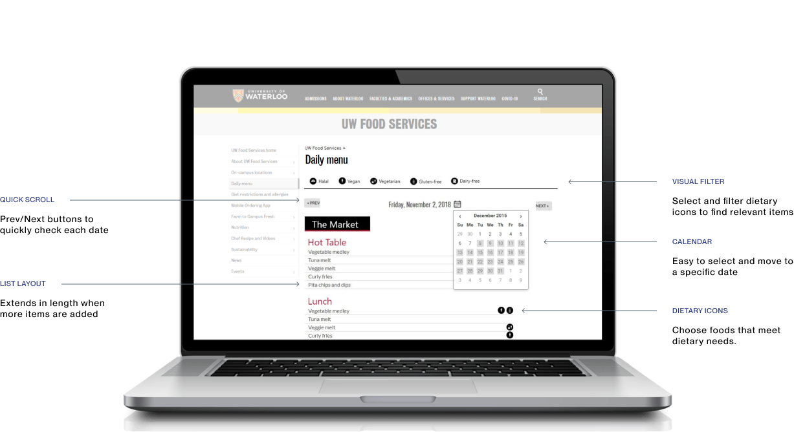
Locations & Hours
Designed for a quick check of the hours of operation and a map of all the locations. Mostly used by returning students who are familiar with UWFS eateries. New students can still benefit from the map to find a nearby eateries.
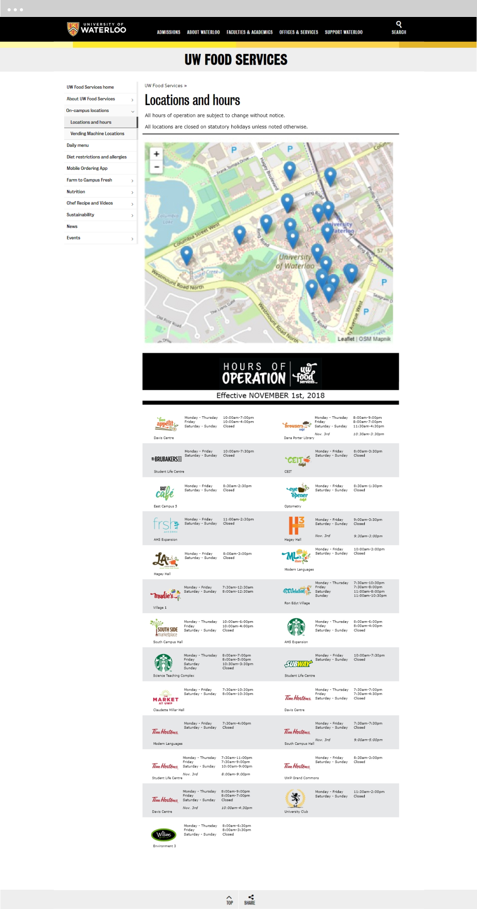
Quick Access to Information
We found that most users use this page to search for what’s nearby and their operating hours. The original layout used anchor links to scroll the page down to find a specific eatery's information but without a back-to-top button (due to the website's limitations, the button is fixed to the footer), many complained this method was too slow and inconvenient.
We moved most of the detailed information such as the features and payment options to a separate “On-Campus Locations” page based on their importance to users. This let us remove the links and create a cascading table that is much faster to use. This also reduces the number of clicks users need to make to complete their task.
On-Campus Locations
A dynamic feature of the website showcasing each eatery. The goal is for new users to browse our many locations and find new products of interest.
Search options lets users look up specific locations or buildings. Eateries also include detailed information such as menus and contact information of the location manager that users may sometimes need to access.
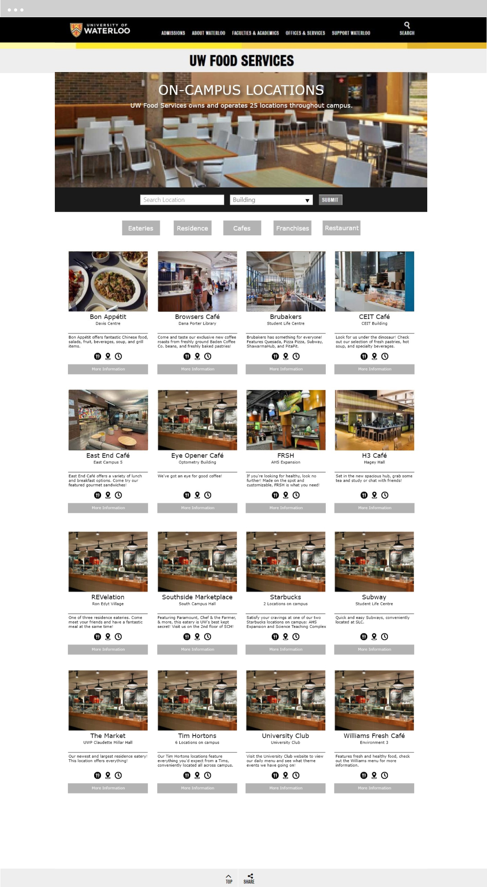
Reflections.
How did people respond?
The response to the new design was very positive for users, staff, and key stakeholders. Since I took several courses learning about the Waterloo CMS framework, I was able to implement some of the simpler key elements such as switching the menu layout from a table to a list and reorganizing information on the home page that would be beneficial to the website in the short term while we continue to test the rest of the design.
This was greatly beneficial to the internal staff at UWFS as they were no longer restricted by the constraints of the table, and the layout looked much better for mobile users. We also received feedback from users who attended our events afterwards that they found out about it from the new social media elements on the website.
Mistakes and areas of improvement?
I’ve learned a lot from this project in terms of both personal and professional development. The latter half of the project - creating the first wireframes - was pretty rushed as my four-month internship was drawing to an end and I didn’t have enough time to properly collect feedback on my design.
Looking back, there are a few features that I believe could be further improved such as the layout of the Locations & Hours page. If I could go back, I would take my first few wireframes and run them through more user tests to collect valuable data on how they perform in a semi-practical setting before moving on to the next step of the design process.
What’s next?
With more time, I would test the current iteration to determine areas of improvement and further iterate the design but this was as far as I was able to get within my 4-month internship period. The remainder will be passed onto the next design intern.
To help with the transition I was able to document and package everything I worked on including the research data, wireframes, assets, prototypes, and a short document on my thought process. I was fortunate to be able to discuss the internal structure of the website and the technological feasibilities with our in-house developer and business development manager throughout my design process, making the transition easier as they can pass along my vision. Our collaboration resulted in a much more fluent internal hand-off process.
Final Thoughts
This project was challenging but altogether I am very happy to have been given the opportunity to put pen to paperand take on this great responsibility. I am grateful to my manager Amanda for her trust, guidance, and criticism throughout my four month internship, and Rachael, for her help deciphering the complex inner workings of the website in order to better tailor our design solution to the needs of the UWFS staff.
Get in Touch.
Toronto, Canada
Designed by me with coffee and ♥. Under construction. © 2022